Mais de uma década construindo experiências, regenerando o meio ambiente e conectando pessoas através da arte, música e sustentabilidade.
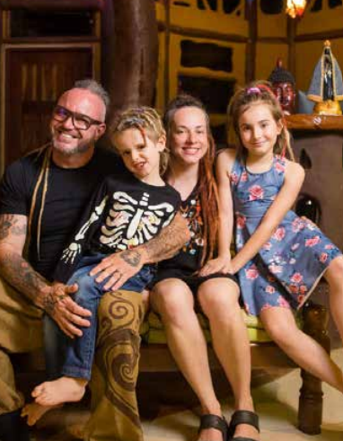
Em 2014, Fábio Defourny (Dêfo) e Ivana Klava foram motivados pelo sonho de criar um ambiente sustentável e em harmonia com a natureza para sua filha recém-nascida. Após uma longa busca, encontraram em Lagoinha/SP uma propriedade de 13,65 hectares que se tornaria a Aldeia Outro Mundo.
O que antes era uma área desmatada, utilizada para pastagem de gado, transformou-se em uma referência de regeneração ambiental, com cerca de 80% da área reflorestada e mais de 10 mil árvores plantadas. Hoje, a Aldeia é um espaço que une natureza, cultura, sustentabilidade e experiências transformadoras.


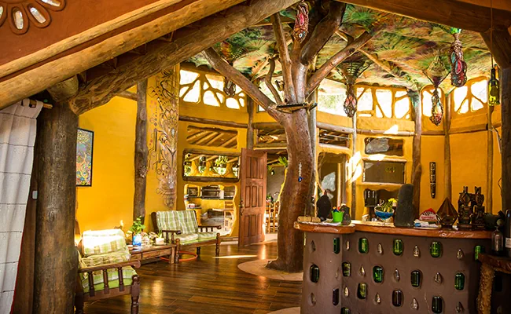
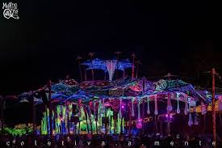
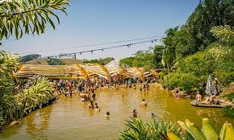
A Aldeia Outro Mundo é uma ecovila localizada em Lagoinha/SP que une sustentabilidade, regeneração ambiental, bioconstrução, educação ambiental, arte, cultura e turismo regenerativo, promovendo experiências transformadoras e uma convivência harmoniosa entre pessoas e natureza.
Vida em harmonia com a natureza.
Aprender, aplicar e compartilhar práticas sustentáveis.
Práticas ecológicas aplicadas diariamente.
Arte, música e experiências transformadoras.
Experiências que geram impacto positivo.
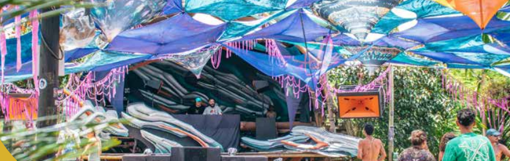
Principal espaço para shows, festivais e apresentações da Aldeia, com capacidade para até 7 mil pessoas e estrutura completa para grandes eventos em meio à natureza.
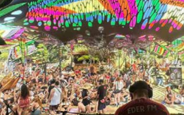
Um espaço acolhedor para apresentações intimistas, convivência e relaxamento em meio à natureza. Com capacidade para até mil pessoas, o Chillout combina arte, cultura e conexão em uma atmosfera única da Aldeia.
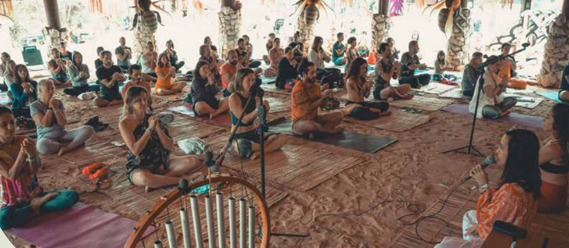
Espaço dedicado ao autoconhecimento, bem-estar e expansão da consciência, reunindo práticas integrativas, meditação, yoga, vivências terapêuticas e experiências de conexão entre corpo, mente e natureza.
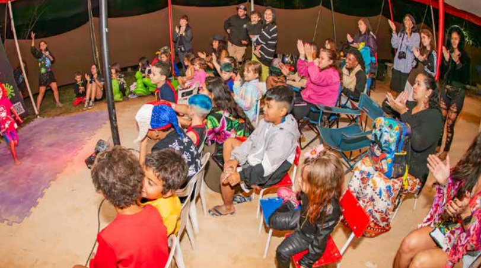
Espaço dedicado às crianças e suas famílias, com oficinas culturais, brincadeiras educativas e atividades que unem diversão, aprendizado e contato com a natureza.
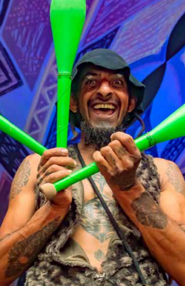
Um espaço de conexão, aprendizado e transformação, onde arte, cultura e conhecimento se unem por meio de oficinas, palestras, vivências e iniciativas colaborativas voltadas ao desenvolvimento humano.
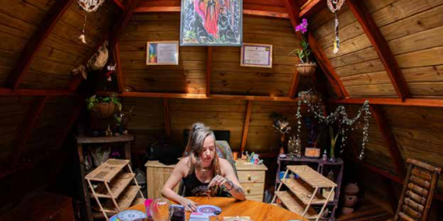
Uma jornada de autoconhecimento e reconexão que integra harmonização energética, sabedoria ancestral e desenvolvimento pessoal, promovendo equilíbrio entre corpo, mente e espírito.

Experiência gastronômica que une ingredientes selecionados, vegetais agroecológicos e sabores artesanais em um ambiente acolhedor integrado à natureza.
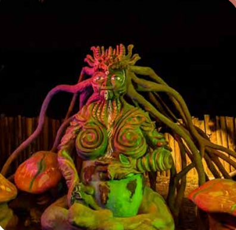
Um espaço onde arte e sustentabilidade se encontram através de bioesculturas e obras criadas com materiais naturais e reciclados, transformando a paisagem em uma verdadeira galeria ao ar livre.
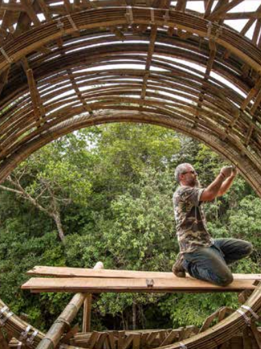
A Aldeia Outro Mundo adota a bioconstrução como alternativa aos modelos convencionais de construção, priorizando técnicas sustentáveis, materiais naturais e soluções que reduzem o impacto ambiental.
Inspirada pelos princípios da permacultura, a Aldeia busca criar espaços em harmonia com a natureza, promovendo o uso consciente dos recursos e contribuindo para um futuro mais equilibrado.
Sistema sustentável de abastecimento com poço artesiano de 280 metros, reserva de 160 mil litros e reaproveitamento de águas pluviais, reduzindo o consumo hídrico para cerca da metade da média nacional.
Com 120% de autossuficiência energética, a Aldeia produz mais energia limpa do que consome, reduzindo emissões de CO₂ e contribuindo para um futuro mais sustentável.
Resíduos orgânicos transformados em adubo, reciclagem especializada e sistemas ecológicos que devolvem recursos à natureza de forma sustentável.
Mais de 10 mil árvores nativas plantadas, recuperação de nascentes e projetos de preservação que contribuem para a regeneração ambiental da região.
Resíduos orgânicos transformados em adubo, reciclagem especializada e sistemas ecológicos que devolvem recursos à natureza de forma sustentável.
Festivais que unem música, arte, sustentabilidade, espiritualidade e conexão humana em cenários únicos da Aldeia Outro Mundo.
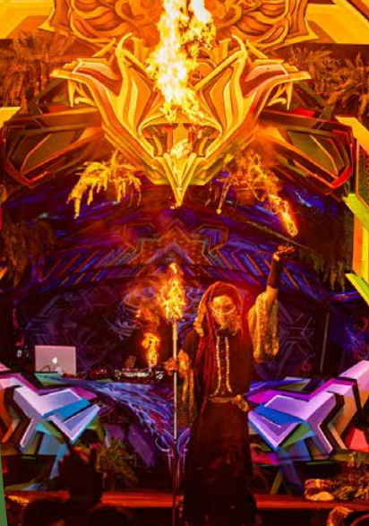
Realizado desde 2009, o Mundo de Oz reúne música, arte, cultura, sustentabilidade e vivências transformadoras. Reconhecido internacionalmente, já conectou centenas de milhares de pessoas e recebeu artistas e visitantes de diversas partes do mundo.
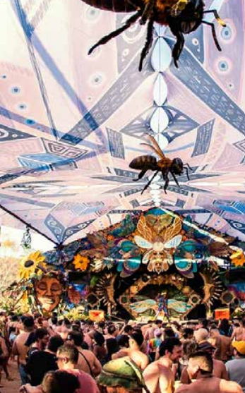
Festival realizado desde 2009 que reúne música, arte, cultura, sustentabilidade e experiências imersivas, atraindo público e artistas de diversas partes do mundo.
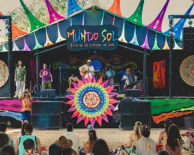
Evento ecumênico que reúne diferentes tradições espirituais por meio da música, palestras e vivências, promovendo conexão, respeito à diversidade e consciência coletiva.
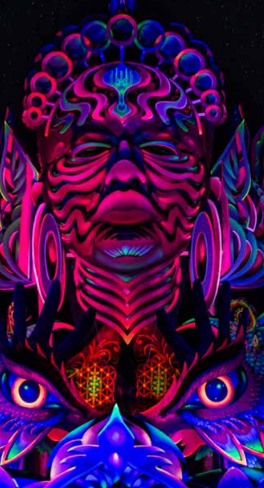
A celebração de ano novo da Aldeia, marcada por uma atmosfera familiar, experiências culturais e momentos especiais de conexão entre pessoas e natureza.
Conheça os projetos, eventos, hospedagens e iniciativas que fazem da Aldeia Outro Mundo uma referência em sustentabilidade e transformação.